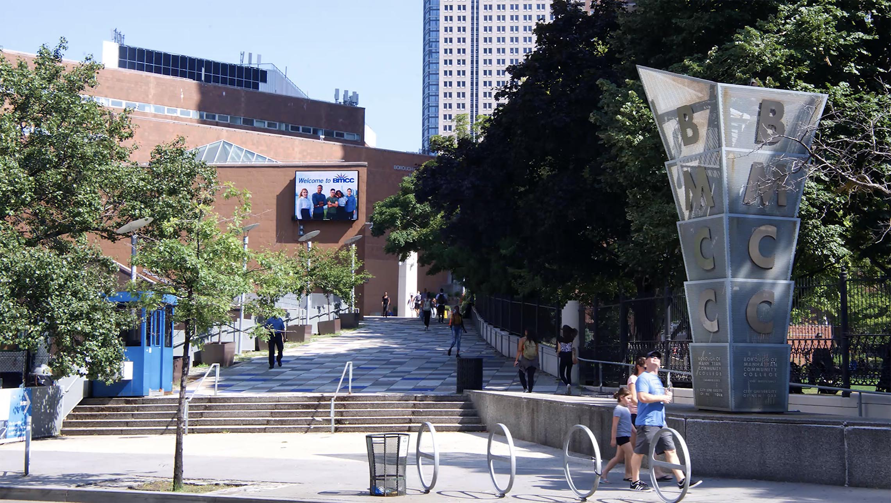

The Borough of Manhattan Community College is Manhattan's first community college. Founded in 1963, it is enrolling approximately 27,000 students in degree programs. It is also ranked NY's number 1 community college.
I am a computer science student graduating in Spring 2026. I am also the outreach coordinator for Women In Computing and the Vice President of the Women in Cybersecurity chapter of the Programming Club.